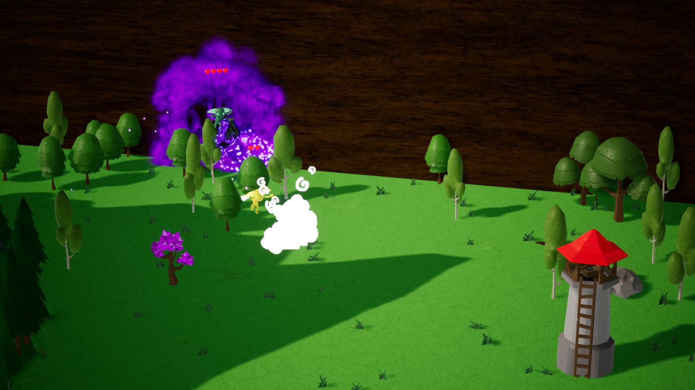
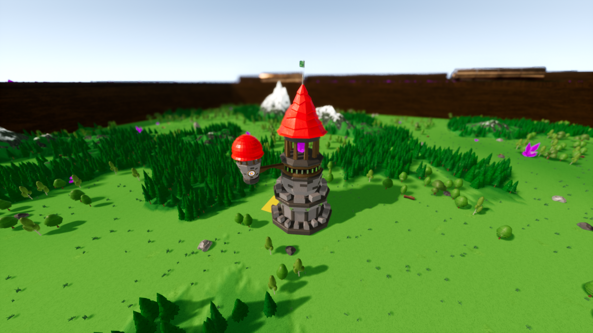
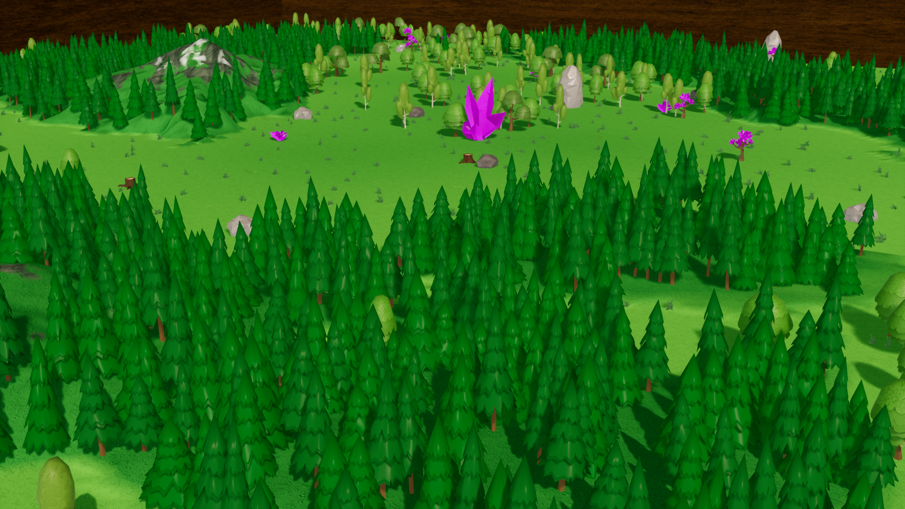
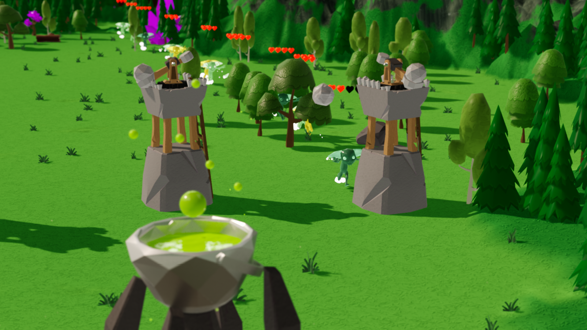
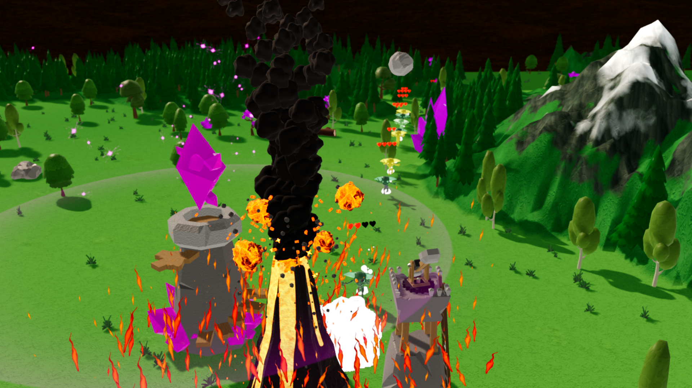
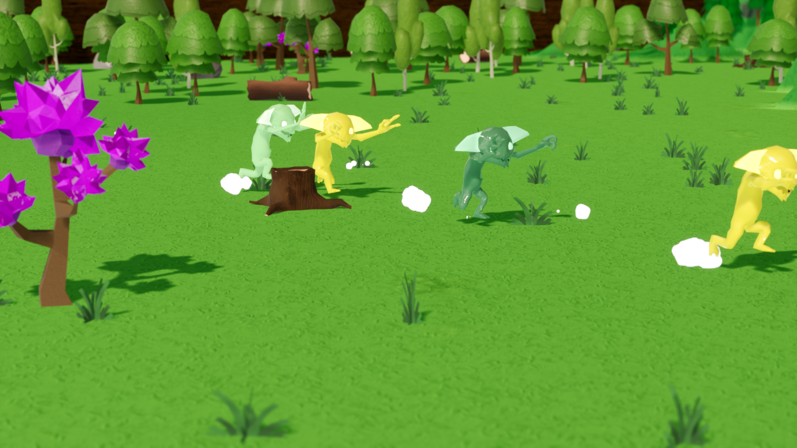
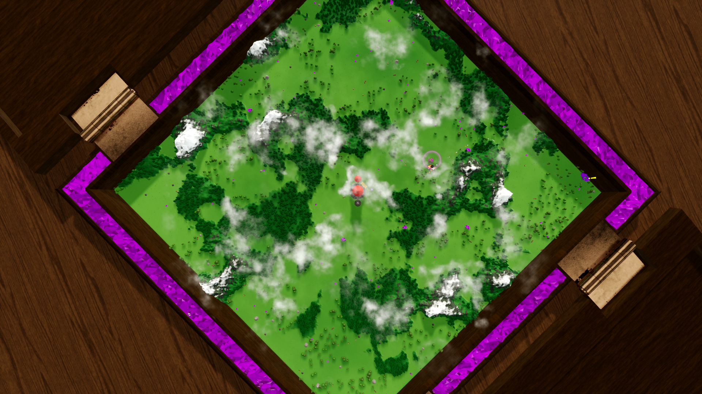

Doer and the Thinker
A Fresh Take on the Tower Defense Genre
Doer and the Thinker is a procedural tower defense game that focuses on real-time strategy, resource management, and the continual idea of give and take, in which the player will have make choices as the ‘Doer’ or the ‘Thinker’ that can affect ones play style.
Doer and the Thinker was a game conceptualized as the game that I would focus on for the duration of my University career. After moving from Unity to Unreal after my first year of school, I sought out a project that I could build my skills upon, and alongside my colleague Tyler, I began my journey into Unreal Engine and game development as a whole. My main role on the team is as a programmer, and I also create all of the models and UI elements in the game. Tyler's main role is as a programmer firstly, as he also creates all of the sound effects and music for the game, and together we make an excellent team.
Work I’m most proud of:
- Procedural Terrain Generator
- Data-driven system to change out towers, enemies, landscape, and building parameters
- 3D main menu sign system